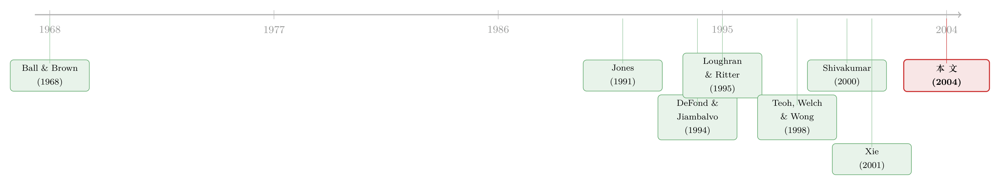

财报里灌进去的水，最后变成了一张传票
本文读的是 DuCharme, Malatesta & Sefcik (2004, JFE)：发行新股的公司在发行前后普遍把利润"做高"（异常应计偏正），而那些把应计推得最猛的公司，事后既更可能挨股东集体诉讼、和解赔得也更多，发行后股价还跌得更狠。作者用「会不会被告、赔多少」当成一台测谎仪，把"机会主义操纵"从"正当信号"里干净地分了出来。
1 引言：一个早就被发现、却始终没被坐实的嫌疑
先说一件几乎已经成为共识的事。
公司要发股票——无论是首次公开发行 (initial public offering, IPO) 还是增发 (seasoned equity offering, SEO)——发行前后报出来的利润，平均而言都偏高。更准确地说，是其中那部分应计利润 (accruals) 偏高：不是真金白银的现金流，而是靠"提前确认收入、推迟确认费用"做出来的账面盈余。DuCharme (1994)、Friedlan (1994)、Shivakumar (2000) 都看到了这一点；Rangan (1998) 和 Teoh, Welch & Wong (1998) 进一步发现，这些应计在发行之后会反转 (reverse)——水分慢慢蒸发，利润随之回落，而股价也跟着往下走。
听起来证据链已经很完整了：公司在发行前把利润注水，骗投资者出个好价钱，等钱到手、水分退去，股价自然下跌。这就是所谓的机会主义假说 (opportunism hypothesis)。
可问题在于——这真的就能下结论了吗？
这里藏着一个让人不太舒服的逻辑漏洞。还有一种解释，完全相反，却能解释一模一样的数据。
设想公司管理层是诚实的。他们手里掌握着关于公司未来的私人信息，知道公司确实要变好，于是通过会计上的酌情选择，把这份"利好"如实地、提前地反映到当期利润里——这叫正当信号 (valid signaling)。在这种解释下，高应计不是欺骗，而是一种真实信息的传递；投资者不是被骗，而是被告知。至于发行后股价为什么还会跌，那可能根本不是操纵的后果，而是像 Eckbo, Masulis & Norli (2000) 争论的那样，是研究者用错了风险调整模型，制造出来的一个假异象 (spurious anomaly)。
于是麻烦来了：
机会主义假说和正当信号假说，对"发行前后异常应计偏高"这一个事实，给出的预测完全一样。光看应计的高低、看它反不反转、看发行后股价跌不跌，你永远没法把"骗子"和"诚实人"区分开。两边都能自圆其说。
这正是这条文献长期悬而未决的死结。Brous, Datar & Kini (2001) 发现 SEO 之后的盈余公告异常收益其实和零没有显著差别，更是把水搅得更浑——所以作者自己也老老实实地写道，证据"somewhat mixed"，妄下结论是危险的。
那真正关键的一步在于：得找一个变量，它在两个假说下的预测是分叉的。
2 真正巧妙的一招：把"会不会被告"当成测谎仪
作者找到的那个变量，是股东集体诉讼 (shareholder class action lawsuit)。
这一步是全文的灵魂，值得慢慢讲。
美国证券法给了被骗的投资者一条救济渠道。1934 年《证券交易法》的 Section 10b-5 一般性地禁止公司散布虚假或误导性信息；而 1933 年《证券法》的 Section 11 专门管公开发行时招股说明书里的信息披露。两者有一个关键差别：在 10b-5 的诉讼里，原告投资者必须自己证明"信息有缺陷、我信了、我因此亏了"；而在 Section 11 的诉讼里，举证责任反过来落在被告公司身上。正因为告起来更容易，与发行相关的 Section 11 诉讼相当常见。
现在，把两个假说分别代入这台"诉讼机器"，看预测是否分叉：
- 如果是机会主义操纵：那些在发行前把应计推得最猛的公司，等于在自己脚下埋了雷。利润注水越多，事后回落越惨、投资者亏得越多、被告的概率越高，而且一旦被告，和解赔偿额也应该随注水程度水涨船高。
- 如果是正当信号：高应计只是诚实地传递了好消息，投资者没被骗、没受损，那就没有任何理由指望异常应计会和诉讼发生率、和赔偿金额挂上钩。
一句话：诉讼把两个原本纠缠在一起的假说撬开了。在信号假说下，应计与诉讼之间应该是一条平的线；只有在操纵假说下，这条线才该显著地向上倾斜。于是"应计能不能预测被告与赔偿"，就成了一个可以真正证伪的检验。
接着，一个自然的问题是：诉状里告的，到底是不是盈余这回事？作者去翻了案由。在能识别出具体指控的 282 起诉讼里，有 123 起（接近 44%）明确指控了某种形式的盈余管理——收入操纵、渠道压货、不当确认收入、费用操纵、非 GAAP 的会计处理等等。将近 90% 的诉讼指控"重大错报"和"未披露重要信息"。更耐人寻味的是，凡是把审计师列为共同被告的诉讼，有 92.5% 同时指控了盈余管理。这说明：投资者起诉时盯上的，恰恰就是账本本身。
测谎仪选好了，下一步是先把"谎"量出来。
3 怎么量"注水"：修正 Jones 模型
要检验"应计预测诉讼"，先得有一个干净的应计度量。作者沿用了会计与金融研究里的标准做法——修正 Jones 模型 (modified Jones model)，思路与 Teoh, Welch & Wong (1998) 完全一致。
核心想法是：公司的应计利润里，有一部分是正常的（生意做大了，应收应付自然增加），有一部分是酌情的、被管理的。我们要的是后者。办法是先估出"正常应计"该是多少，实际值减去正常值，剩下的残差就当作异常应计 (abnormal accruals)，也就是操纵的代理变量。
第一步，估正常应计的基准。 把每一家发行公司，和同属一个两位 SIC 行业的其他公司放在一起，做一个横截面回归（用加权最小二乘 WLS 估计）：
$$WAC_{ijp} = a_{jp} + f_{jp}[\Delta REV_{ijp}] + u_{ijp}$$
其中 \(WAC_{ijp}\) 是与发行公司 \(j\) 匹配的行业组里第 \(i\) 家公司在第 \(p\) 年的营运资本应计 (working capital accruals)，\(\Delta REV_{ijp}\) 是其当年营收变动，\(a_{jp}\)、\(f_{jp}\) 是待估的截距与斜率，\(u_{ijp}\) 是扰动项。这里有个细节：作者假设扰动项的标准差与公司资产成比例，因此每个观测都按上一年总资产的倒数 \(1/A_{ijp-1}\) 加权——这是 Jones (1991) 就立下的规矩，目的是治异方差。
第二步，算异常应计。 用第一步估出的系数，套到发行公司身上，但要做一个关键修正：
注意第 a3 项里那个 \(-\Delta REC_{ijp}\)（应收账款的变动）。这正是"修正"二字的来历，也是全文方法上最妙的小心思：估系数时用的是 \(\Delta REV\)，但算正常应计时却从营收变动里减去了应收账款变动。
为什么要这么拧？因为操纵利润最常见的手法，就是把还没收到现金的赊销提前确认成收入——这会同时推高营收和应收账款。把应收账款的增量从"正常营收变动"里扣掉，等于默认"靠赊账做出来的那部分收入增长是不正常的"，从而把它统统赶进异常应计里。一句话，这个减法专门用来"抓"赊账注水。
作者把这一版叫"标准模型 (standard model)"，并验证了换成 DuCharme et al. (2001) 的"forecast"与"cash flow"两种设定，结论在定性上稳健。最终用到的核心变量，是异常营运资本应计除以公司资产，记作 ABWAC/A——Teoh et al. 把它叫作"酌情流动应计 (discretionary current accrual)"。
4 数据：一张横跨十年的发行清单
样本来自 Thomson Financial 的 SDC 新发行数据库 (Global New Issues database)，会计数据取自 COMPUSTAT，股票收益取自 CRSP。诉讼信息则靠人工翻查 1988 年 4 月至 2001 年 2 月的 Securities Class Action Alert 以及 LEXIS/NEXIS，按公司名和"class action"逐一比对。
- 样本期：1988–1997 年的承销包销 (firm-commitment) 发行。之所以砍在 1997 年，是为了确保能完整观察到发行后的诉讼——实践中极少有诉讼在发行三年后才提起（样本里从发行到立案最长
1,138天，刚过三年一个月）。 - 规模：共
10,232起发行，其中314起惹上诉讼。IPO 和 SEO 几乎对半分。 - 被告比例的关键差异：
5,324起 IPO 中有226起（4.24%）后来被告；4,908起 SEO 中有88起（1.79%）。两者差异在1%水平显著——IPO 公司明显更容易因发行挨告。
发行特征上，平均 IPO 规模约 $51.1 百万、二次发行占比 12.7%；平均 SEO 约 $73.3 百万、二次发行占比 23.7%。87.4% 的 IPO 和 92.6% 的 SEO 由八大会计师事务所审计。
5 主要结果：注水越多，传票越近
第一，发行公司确实在系统性地把利润做高。 按资产标准化的异常应计均值，IPO 为 8.5%、SEO 为 1.6%，两者都在 1% 水平显著异于零。这和 Teoh et al. (1998) 的发现量级相当——他们报告 IPO 前一年的对应数字是 9.95%、SEO 是 5.37%。
第二，发行后股价确实表现糟糕，反转随之而来。 以发行后第二个月起算的 36 个月买入持有市场调整收益 RETURN：IPO 平均 −9.8%（\(t=-2.67\)），SEO 平均约 −20.6%（\(t=-9.85\)），均在 1% 水平显著为负。这与 Ritter (1991) 论 IPO、Loughran & Ritter (1995) 论 SEO 的长期"破发"传统一脉相承。（关于"发行后跌跌不休是不是真异象、会不会只是样本构造的算术后果"这一争论，可参见《为什么「上市后跌跌不休」可能是一道算术题？》。）
第三——也是全文的杀手锏——被告公司和没被告的公司，是两幅面孔。 单变量比较里，被告的 IPO 公司事后股价更低、应计反转更剧烈；连"质量信号"都不一样：被告 IPO 公司由八大所审计的比例 AUD 为 0.954，显著高于未被告公司的 0.870（\(t=5.003\)）。也就是说，挨告的恰恰是那些当初看起来"更体面、更敢做"的发行。
第四，把测谎仪正式跑一遍。 在控制了审计师与承销商声誉、发行规模、二次发行比例等一系列因素后的多元 logistic 回归里：
诉讼发生率与发行前后的异常应计显著正相关，与发行后股价显著负相关。不仅如此，诉讼的和解赔偿金额同样与异常应计显著正相关、与发行后收益显著负相关。
这正是机会主义假说预测的那条"向上倾斜的线"，而信号假说预测的是"平线"。数据站在了前者一边。
把链条连起来看：发行前注水 → 应计偏高 → 发行后水分退去、应计反转、股价下跌 → 投资者受损 → 提起诉讼、且应计越高赔得越多。每一环都和"有些公司在发行前机会主义地操纵利润、把自己置于诉讼风险之中"这一结论自洽。
值得一提的是，与盈余管理同属"会计酌情→事件→后果"这条逻辑的，还有并购场景下的发行方操纵——收购方在换股并购前同样会做高利润，可参见《财报里那点「虚」，藏在并购方三年后的股价里》。两篇放在一起看，会更清楚"应计操纵"是一种跨事件的普遍企业行为。
6 文献脉络：从"利润含信息"到"利润会咬人"
这条线的起点，是会计与金融最古老的共识之一：盈余里含有关于公司价值的信息。Ball & Brown (1968)、Beaver (1968)、Rendleman, Jones & Latané (1982) 最早证明盈余惊喜与同期股价正相关；Bernard & Thomas (1990) 则补上了"投资者会对盈余信息反应不足"的一笔。

既然利润能动股价，管理层自然有动机去"管"它。Jones (1991) 提出了那个奠基性的应计估计框架——本来是研究公司在进口救济调查中如何策略性地压低利润；DeFond & Jiambalvo (1994) 把它用到了债务契约违约的情境，发现违约公司确有操纵应计的痕迹。
接着，研究者把目光投向新股发行这个最有动机注水的场合。Teoh, Welch & Wong (1998) 是这一支的标杆——他们系统地记录了 IPO 与 SEO 前后的高应计、发行后的反转、以及应计与后市收益的负相关；Rangan (1998)、Shivakumar (2000) 紧随其后。与此并行的，是 Ritter (1991)、Loughran & Ritter (1995) 关于发行后长期破发的"新发行之谜"。
但这一整支都卡在那个"操纵 vs 信号无法区分"的死结上。Eckbo, Masulis & Norli (2000)、Xie (2001) 从不同方向继续追问。本文的位置，就是给这个死结提供了一把新钥匙：不再纠缠于应计本身，而是引入"诉讼"这个外部、独立、且对两个假说预测分叉的变量，把机会主义的那一半证据坐实。
评论与延伸（Q&A + 研究方向）
(a) 几个可能的疑问
Q：异常应计真的等于"操纵"吗？会不会只是 Jones 模型把高速成长误判成了注水？
这是所有应计类研究的命门，本文也不能完全免疫。修正 Jones 模型靠"剔除应收账款增量"来逼近操纵，但快速成长的公司本就应收高企，确实可能被误读。本文的妙处在于：它不靠应计本身去定罪，而是看应计能否预测一个独立事件（诉讼与赔偿）。即便应计含有测量噪声，只要噪声与"日后是否被告"无关，它只会削弱、而非伪造这种正相关。所以诉讼这一环，恰恰部分地化解了度量本身的争议。
Q：会不会是反向因果——股价先跌、投资者才去翻旧账起诉，跟当初有没有操纵根本无关？
单看"被告公司收益更差"确实有这个隐忧。但关键证据是赔偿金额与发行前应计正相关：股价下跌能解释"为什么有人告"，却很难解释"为什么应计越高赔得越多"。后者要求诉讼盯住的是发行时点的会计行为，而非单纯的事后亏损，这正是操纵假说独有的预测。
Q：为什么用诉讼，而不是直接看会计重述或 SEC 处罚？
因为目标是区分"操纵"与"信号"，需要一个对两假说预测分叉的变量。SEC 处罚样本太小、且选择性极强；而 Section 11 诉讼举证责任在被告、发生率较高，覆盖面更广。更重要的是，诉讼自带"赔偿金额"这个连续的强度变量，能检验"应计越高、损害越大"这条更精细的预测，这是二元的处罚指标给不了的。
Q：IPO 比 SEO 更容易被告、应计也更高，会不会只是规模或行业差异在作怪？
作者用 Table 2 说明两类发行的行业分布没有系统性差异，并在多元回归里控制了发行规模、审计师/承销商声誉等。IPO 应计更高（
8.5%vs1.6%）本身也符合直觉：IPO 公司更年轻、信息更不透明、外部约束更弱，注水的空间和动机都更大。
Q：发行后低收益，到底是操纵的证据，还是 Eckbo 等人说的风险调整问题？
本文聪明地绕开了这场打不完的官司。它不需要断言"低收益本身证明了操纵"——即便后市收益里混入了风险溢价，那部分对"被告 vs 未被告"应该是无差别的。真正承担识别重任的，是应计与诉讼/赔偿之间的横截面关系，而不是收益异象的绝对水平。
Q：Section 11 和 10b-5 的举证责任差异，对结论意味着什么？
它解释了为什么发行相关诉讼足够多、足以构成一个可分析的样本（被告举证的 Section 11 让原告更容易立案）。但也提示了一个边界：诉讼门槛低意味着部分诉讼可能是"机会主义索赔"。不过赔偿金额随应计变化这一点，仍然要求底层确有可索赔的会计行为，否则很难解释强度上的对应。
(b) 几个可能的研究问题与提案
1. 债券发行中的盈余管理与违约/诉讼。 【经济故事】本文做的是股票发行。但债券发行人同样有动机在发行前美化报表、压低票息成本，而债权人受损后既可能诉讼、也可能走向违约或评级下调——这是一个比股东诉讼更"硬"的后果变量。 【可行性】中。SDC 有债券发行明细，Moody's/S&P 有违约与评级数据，COMPUSTAT 可算应计。识别上可比照本文，看发行前异常应计能否预测发行后违约率与信用利差走阔；难点在于债券违约样本相对稀疏，需要足够长的窗口。
2. 外资持有人作为监督者，能否抑制发行前的盈余管理？ 【经济故事】如果机会主义操纵源于内部人和投资者之间的信息不对称，那么持股结构里"更专业、监督更强"的外资机构占比，可能降低发行前注水的程度与日后诉讼概率。这与"外资到底是监督者还是蝗虫"的争论直接相关（见《外资真是「蝗虫」吗？》）。 【可行性】中/低。需要发行公司层面的外资持股数据（如 13F、各国监管披露），并处理外资进入的内生性——可考虑指数纳入或可投资度变化作为外生冲击。识别难度不低，但故事干净。
3. 发行前盈余管理与发行后二级市场流动性。 【经济故事】注水本质上是制造信息不对称。若市场事后逐渐识破，做市商面对的逆向选择风险上升，发行后债券/股票的买卖价差应当更宽、深度更差。这把"盈余管理"从"收益异象"接到了"流动性"这条线上。 【可行性】中。股票端可用 TAQ 算价差，债券端可用 TRACE。把异常应计作为横截面解释变量，检验它对发行后流动性指标的预测力；关键是控制规模与波动等流动性的常规决定因素。这是我自己最想做的一个方向。
参考文献
- Ball, R., Brown, P. (1968). An empirical evaluation of accounting income numbers. Journal of Accounting Research 6, 159–178.
- Beaver, W.H. (1968). The information content of annual earnings announcements. Journal of Accounting Research 6 (Suppl.), 67–92.
- Bernard, V.L., Thomas, J.K. (1990). Evidence that stock prices do not fully reflect the implications of current earnings for future earnings. Journal of Accounting and Economics 13, 304–340.
- Brous, P., Datar, V., Kini, O. (2001). Is the market optimistic about the future earnings of seasoned equity offering firms? Journal of Financial and Quantitative Analysis 36, 141–168.
- DeFond, M.L., Jiambalvo, J.J. (1994). Debt covenant violation and manipulation of accruals. Journal of Accounting and Economics 17, 145–176.
- DuCharme, L.L., Malatesta, P.H., Sefcik, S.E. (2001). Earnings management: IPO valuation and subsequent performance. Journal of Accounting, Auditing and Finance 16, 369–396.
- DuCharme, L.L., Malatesta, P.H., Sefcik, S.E. (2004). Earnings management, stock issues, and shareholder lawsuits. Journal of Financial Economics 71(1), 27–49.
- Eckbo, B.E., Masulis, R.W., Norli, Ø. (2000). Seasoned public offerings: resolution of the new issues puzzle. Journal of Financial Economics 56, 251–291.
- Friedlan, J.M. (1994). Accounting choices of issuers of initial public offerings. Contemporary Accounting Research 11, 1–32.
- Jones, J. (1991). Earnings management during import relief investigations. Journal of Accounting Research 29, 193–228.
- Loughran, T., Ritter, J.R. (1995). The new issues puzzle. Journal of Finance 50, 23–51.
- Rangan, S. (1998). Earnings management and the performance of seasoned equity offerings. Journal of Financial Economics 50, 101–122.
- Ritter, J.R. (1991). The long-run performance of initial public offerings. Journal of Finance 46, 3–27.
- Shivakumar, L. (2000). Do firms mislead investors by overstating earnings before seasoned equity offerings? Journal of Accounting and Economics 29, 339–370.
- Teoh, S.H., Welch, I., Wong, T.J. (1998). Earnings management and the underperformance of seasoned equity offerings. Journal of Financial Economics 50, 63–99.
- Teoh, S.H., Welch, I., Wong, T.J. (1998). Earnings management and the long-run market performance of initial public offerings. Journal of Finance 53, 1935–1974.
- Xie, H. (2001). The mispricing of abnormal accruals. The Accounting Review 76, 357–373.